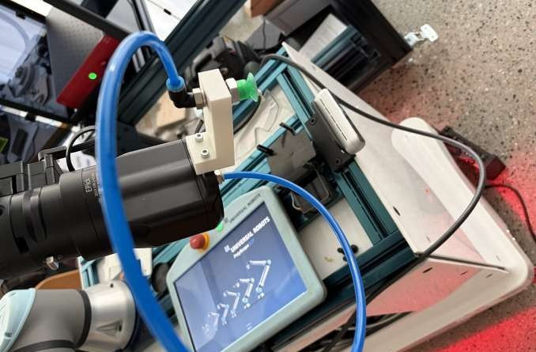

Collaborative Robotics & Laser Engraving
Independently developed an automated laser-marking demonstrator combining a UR5e collaborative robot with engraving equipment, from system concept to assembly and testing.
- Designed the cell layout, workspace and mechanical fixtures
- Selected components and coordinated directly with suppliers
- Produced CAD designs and 3D-printed mounting components
- Used RoboDK and investigated thin-card pickup issues through physical tests
UR5eFusion 360SolidWorksRoboDKPython3D Printing
Open illustrated case study · cell layout & handling ↗
Project context & outcome
Developed during my engineering internship in Lugano. The project emphasized system-level ownership: defining a physical configuration, sourcing components, building interfaces and iterating on real manipulation constraints. The available public material does not establish that a production-ready installation was commissioned.